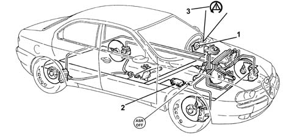
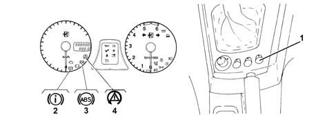
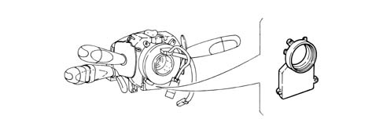
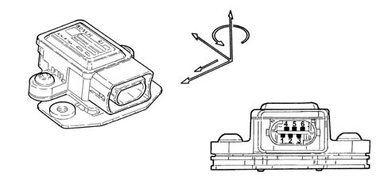
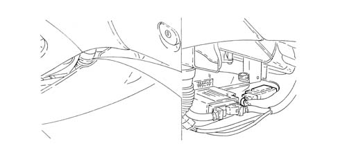
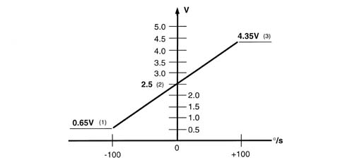

3350E vehicle direction control system vdc
- Path
- Descriptions > 33 BRAKING SYSTEM > 3350 DRIVE CONTROL' > 3350E vehicle direction control system vdc
- Kind
- system description
- Applies to
- all engines; all production periods
- Interactive page
- https://sloeber94.github.io/elrnDB-a156/en/#/3232928
Applies to: all engines; production: da 03/02 a 09/03, da 10/03
SPECIFCATIONS
General characteristics
The V.D.C. system (Vehicle Dynamic Control System) controls the vehicle during dynamic manoeuvres on the road and intervenes in emergency conditions.
In any type of grip conditions this system increases the safety margin for the vehicle in the case of sudden manoeuvres or initial losses of grip (passing through puddles, icy sections, etc.).
Whilst the anti-lock braking system (ABS) maintains the stability of the vehicle during rapid deceleration and the traction control systems (ASR/TCS) work during rapid acceleration, the V.D.C. system has been designed to keep the vehicle stable in the case of sudden manoeuvres in order to improve the vehicle's road holding, especially over slippery surfaces.
In effect the V.D.C. system reacts to both vehicle oversteer and understeer and is equipped to return it to a stable condition to allow the driver to maintain full control of the vehicle.

1 - Steering angle sensor 2 - Yaw/side acceleration sensor (integrated within a single component) 3 - VDC warning light in instrument panel
PERFORMANCE
The V.D.C.:
- recognizes the wheels' longitudinal or lateral loss of grip;
- controls all the vehicle's driving conditions, from braking to acceleration to ensure the direction and stability of the geometry;
- assists the driver, even if they are not particularly experienced, to control critical situations within certain limits.
SYSTEM SPECIFICATIONS
Devices adopted
The V.D.C. system is managed by the ABS control unit with the restriction that only vehicles equipped with ABS/ASR can be fitted with this new function.
The control unit processes the signals from the following sensors:
- steering angle sensor,
- side acceleration sensor and slewing sensor,
- engine operating conditions;
- wheel rpm sensor,
and uses special algorhythms in the software to obtain the values for dynamic control:
- sliding of the wheels,
- drifting of the axles,
- wheel geometry angles, etc.
From these figures the system correctly interprets any mistakes made by the driver and returns the vehicle to a stable condition.
In addition to the above mentioned sensors, the minimum interface requirements for the vehicle to fit the system are:
- high speed CAN line,
- power unit with specific brake pump,
- specific ABS unit,
- instrument panel with special active type warning lights.
OPERATING
Operating principle
The basic idea behind the V.D.C. consists of comparing the nominal parameters (processed by the control unit on the basis of the speed of the 4 wheels, steering angle, slewing speed, lateral acceleration, braking torque and engine torque) with the actual parameters in a given driving situation.
In effect, on the basis of the input parameters it is possible to calculate, using a very complex mathematical model, whether the vehicle is taking a bend within the grip limits or whether it is about to skid (oversteer/understeer).
Controlling the dynamics of the vehicle in extreme conditions is certainly second nature for a professional driver, but can be complicated for a 'normal' driver who may find themselves in emergency conditions. The V.D.C. system intervenes in such cases, acting to restore driving conditions which are compatible with the current grip conditions.
The V.D.C. system uses two sensors, one of which 'reads' the slewing speed, or the rotation around the vertical axis of the vehicle.
The sensor sensor, on the other hand, detects lateral acceleration. On the basis of this data, the V.D.C. understands whether the vehicle is about to skid at the front or the back (oversteer/understeer).
In order to make it possible to control these critical situations, the system is capable of varying the injection parameters to manage the engine power and decelerate each of the four wheels individually thereby producing a slewing moment which is opposed to the one causing the instability in relation to the normal trajectory.
If the vehicle loses grip at the rear, this movement is recovered by deceleration aimed at the outer wheels thereby restoring the necessary side grip to the rear wheels.
If the loss in grip involves the front carriage, the system implements a reduction in power through choking.
Button/warning light
When the key is turned to the ON position, the VDC warning light in the instrument panel should come on and go off after about 4 seconds.
If the warning light does not go out, or remains on whilst driving, this indicates a failure in the system.
If the warning light flashes during driving, this means that the VDC system has intervened.

1 - ASR warning light in button 2 - EBD warning light in instrument panel 3 - ASR warning light in instrument panel 4 - VDC warning light in instrument panel
In the case of problems the VDC and ASR systems switch off automatically and the VDC warning light in the instrument panel and the ASR warning light on the button come on constantly.
If the fault only involves the VDC system, the warning light in the instrument panel comes on whilst the warning light on the ASR button remains off and the operation of the ASR system is still enabled.
If, on the other hand, the fault only affects the ASR, both systems are disabled and the VDC warning light in the instrument panel and the warning light on the ASR button come on constantly.
If the VDC or ASR systems are not working properly, the vehicle behaves like a version on which these systems are not fitted.
The table below summarizes the warning light readings in the different operating conditions.
System status | ASR warning light on button | EBD warning light in instrument panel | ABS warning light in instrument panel | VDC warning light in instrument panel | |
|---|---|---|---|---|---|
Check (4s) | EBD/ABS/ASR/VDC OFF for the first 500ms | ON | ON | ON | ON |
Running | EBD/ABS/ASR/VDC ON | OFF | OFF | OFF | OFF |
ASR deactivated manually | EBD/ABS/VDC ON ASR OFF | ON | OFF | OFF | OFF |
EBD faulty | EBD/ABS/ASR/VDC OFF | ON | ON | ON | ON |
ABS faulty | EBD ON ABS/ASR/VDC OFF | ON | OFF | ON | ON |
ASR faulty | EBD/ABS/VDC(1) ON ASR OFF | ON | OFF | OFF | ON |
VDC faulty | EBD/ABS/ASR ON VDC OFF | OFF | OFF | OFF | ON |
VDC/ASR faulty | EBD/ABS ON VDC/ASR OFF | ON | OFF | OFF | ON |
ASR/VDC activated | EBD/ABS/ASR/VDC ON | OFF | OFF | OFF | INTERMITTENT |
Insufficient brake fluid level or parking brake on | EBD/ABS/ASR/VDC ON | OFF | ON | OFF | OFF |
COMPONENT DESCRIPTION
Steering sensor
Specifications
Operation
The steering angle sensor detects steering wheel angle and turning speed and makes the data available to the C-CAN network (steered angle sensor node).

Components
Location
The sensor is incorporated in the steering column switch unit and cannot be dismantled on its own.
Pin out
the sensor comes with a four pin connector, two pins are used to supply the sensor and two for the C-CAN line
Pin 1, Earth
Pin 2, +15 positive
Pin 3, C-CAN H Line
Pin 4, C-CAN H Line
Operation
The sensor measures the following using its internal electronic system:
- the steering column angular position
- the steering column rotation speed.
This information is processed directly by the sensor and made available to the brake node via the C-CAN network
The sensor has a measurement range of 1560° and a resolution of 0.1 °.
The sensor must be set to the steering wheel position in order to work properly. This setting is carried out using a Tester (see instructions provided with the EXAMINER device).
The sensor comes with an automatic diagnosis function and is able to check the plausibility of information processed.
Lateral yaw/acceleration sensor
Specifications
Operation
The lateral yaw/acceleration sensor detects rotations about the vehicle vertical axis (yaw) and measures side accelerations.
It is connected directly to the ABS control unit.

Sensor operational specifications are as follows:
Supply voltage:
- Minimum value 8.2 V
- Maximum value 16V
- Rated value 12V
Operating temperature:
- Minimum value -40° C
- Maximum value +85° C
Current uptake at 12 V:
- Rated value 70mA
Yaw sensor:
- Measurement range +/-100 °/s
- Resolution +/-0.2 °/s
Side acceleration sensor
- Measurement range +/-1.8 g
Components
The sensor consists of a plastic case that encloses the sensitive parts that detect lateral yaw and acceleration and also an electronic control system.
The sensor comes with a six pin connector - all pins are connected.
Pin1 - Yaw sensor reference signal
Pin2 - ABS control unit yaw sensor test signal
Pin3 - 12V sensor supply
Pin4 - Yaw signal in °/Sec
Pin5 - Side acceleration signal in G
Pin6 - Earth
Location
The sensor is located at the centre of gravity beneath the central console near the Air Bag control unit

Operation
The sensor is supplied directly by the ABS control unti and supplies a yaw and acceleration signal simultaneously via its sensitive elements.
The yaw sensor is processed directly by the sensor and sent to the ABS control unit with a superimposed reference signal.
Yaw signal range is between:
- lower limit 0.65V
- upper limit 4.35V
- reference signal 2.5V.

1 - Upper limit 2 - Reference signal 3 - Lower limit
The ABS control unit supplies an alternating signal to the sensor for testing and safety functions.